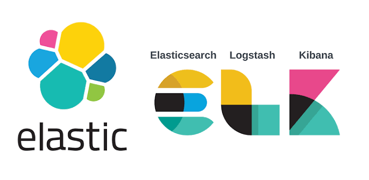

ELK
projects

- Minimum requirements
- Ubuntu ISO
- 4 CPUs
- 30 GB of RAM
- 100GB of storage
- elastic documentation
- Software needed:
- sudo apt update && upgrade
- Docker (instructions above) + portainer
- enter docker cont as root:
- enter docker cont as root:
Code to RunInstallation:
sudo apt install net-tools git curl docker docker.io docker-compose ssh
ifconfig
git clone <https://github.com/elkninja/elastic-stack-docker-part-one.git>
cd elastic-stack-docker-part-one/
mkdir elk-docker
//copy all files from the git (including hidden . files to new dir)
nano .env
//modify passwords
// because this is installed on ubuntu 20.04 docker-compose needs to be manually updated
sudo curl -L "<https://github.com/docker/compose/releases/download/1.27.4/docker-compose-$>(uname -s)-$(uname -m)" -o /usr/local/bin/docker-compose
sudo chmod +x /usr/local/bin/docker-compose
sudo docker-compose -v
//should be docker-compose 1.27
sudo docker-compose up -d
//sudo docker exec -it <docker ID> /bin/bash into docker container if needed
sudo docker volume create portainer_data
sudo docker run -d -p 8000:8000 -p 9443:9443 --name portainer --restart=always -v /var/run/docker.sock:/var/run/docker.sock -v portainer_data:/data portainer/portainer-ce:2.21.0
//remove docker-setup-1
Security:
sudo docker cp elk-docker_es01_1:/usr/share/elasticsearch/config/certs/ca/ca.crt /tmp/.
ls -la ca.crt
sudo chmod 644 /tmp/ca.crt
sudo update-ca-certificates
//Curl ca.crt should return
user@elk-stack:~/Desktop/elk-docker$ curl --cacert /tmp/ca.crt -u elastic:121499rr <https://localhost:9200>
{
"name" : "es01",
"cluster_name" : "docker-cluster",
"cluster_uuid" : "HfBY7fZ0SEio1o19hTJpQQ",
"version" : {
"number" : "8.7.1",
"build_flavor" : "default",
"build_type" : "docker",
"build_hash" : "f229ed3f893a515d590d0f39b05f68913e2d9b53",
"build_date" : "2023-04-27T04:33:42.127815583Z",
"build_snapshot" : false,
"lucene_version" : "9.5.0",
"minimum_wire_compatibility_version" : "7.17.0",
"minimum_index_compatibility_version" : "7.0.0"
},
"tagline" : "You Know, for Search"
}